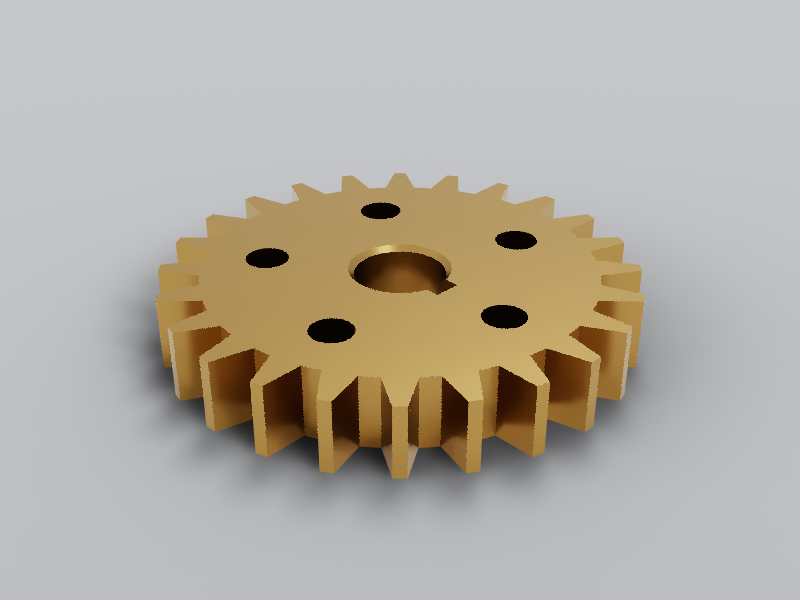

gear
A spur-gear-like wheel: a hub with trapezoid teeth spread by a polar pattern, lightening holes and a keyed bore. (Straight-flank teeth, not a true involute.) Run: cad run examples/gear.ts

Source
Run it with cad run examples/gear.ts.
// A spur-gear-like wheel: a hub with trapezoid teeth spread by a polar pattern, lightening
// holes and a keyed bore. (Straight-flank teeth, not a true involute.)
// Run: cad run examples/gear.ts
import { box, circle, cylinder, model, param, polygon, sel } from "@cad/sdk";
export const gear = model("gear", () => {
const teeth = param("teeth", 24, { min: 8, max: 80, step: 1 });
const m = param("module", 2, { min: 0.5, max: 5, step: 0.25, unit: "mm" });
const t = param("thickness", 8, { min: 2, max: 30, unit: "mm" });
const pitch = (m * teeth) / 2;
const tip = pitch + m, root = pitch - 1.25 * m;
const pitchAngle = (2 * Math.PI) / teeth;
const rootHalf = (root * pitchAngle) / 4 + 0.4 * m, tipHalf = 0.35 * m;
const blank = circle(root).hole(circle(5)).extrude(t);
const tooth = polygon([[root - m, -rootHalf], [tip, -tipHalf], [tip, tipHalf], [root - m, rootHalf]]).extrude(t);
const hole = cylinder((root - 12) / 4, t * 3).translate((root + 8) / 2, 0, 0);
const key = box(4, 3, t * 3).translate(5, 0, 0);
return blank
.fuse(tooth.polarCopies(teeth))
.cut(hole.polarCopies(5), key)
.chamfer(sel.radius(5).and(sel.type("circle"), ">Z or <Z"), 0.6) // both ends of the bore
.label("gear", { color: "#b08d57", material: "brass" });
});
if (import.meta.main) await gear();